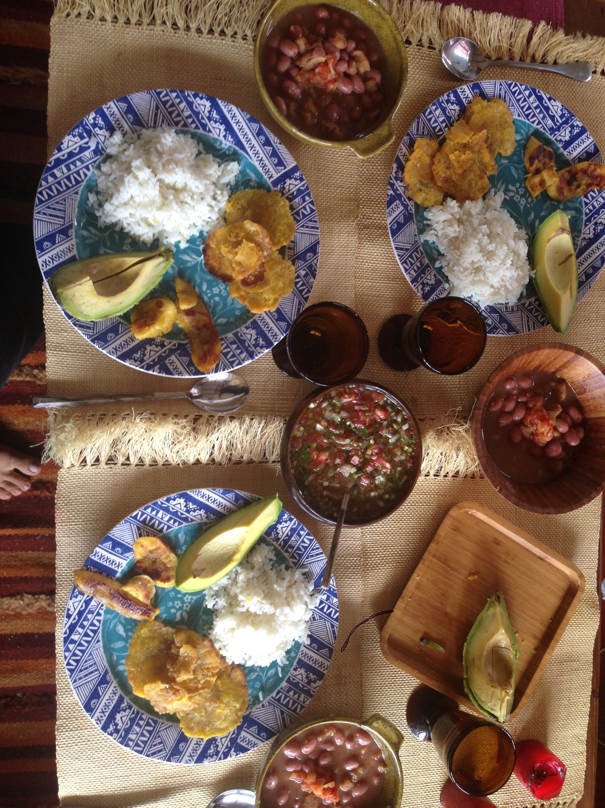

Casado de arroz, frijoles y patacones
Ingredients
3×
- 250 g de arroz blanco
- 500 g de frijoles rojos cocidos
- 1 cebolla
- 1 diente de ajo
- comino
- sal
- 2 plátanos verdes
- 1 plátano maduro
- 2 tomates
- ½ cebolla
- cilantro
- zumo de lima
- ½ aguacate

Preparación
Paso 1
Cocer 250 g de arroz blanco. Calentar 500 g de frijoles rojos cocidos con su caldo, 1 cebolla y 1 diente de ajo picados, comino y sal.
Paso 2
Cortar 2 plátanos verdes en trozos gruesos, freír, aplastar y volver a freír hasta que estén crujientes (patacones). Freír también 1 plátano maduro en rodajas.
Paso 3
Preparar un pico de gallo con 2 tomates, ½ cebolla y cilantro picados, zumo de lima y sal.
Paso 4
Servir el arroz con los frijoles, los patacones, el plátano frito, ½ aguacate por persona y el pico de gallo.